Shingo
Shingo · Aomori
Shingo
Highlighted on the Aomori map.
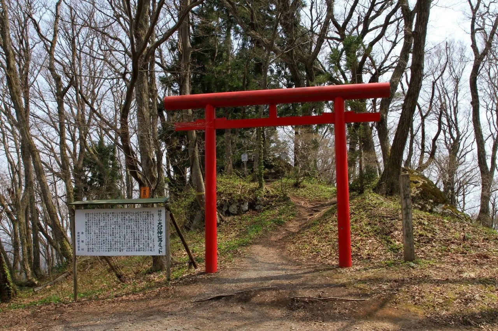
Stay
新郷温泉館
Shingo Onsenkan
Onsen with room-only stays in Shingo, Aomori.
間木ノ平グリーンパーク バンガロー
Makinotai Green Park Bungalows
Bungalows, late April to early November in Shingo, Aomori.
Dining
迷ヶ平 しもに
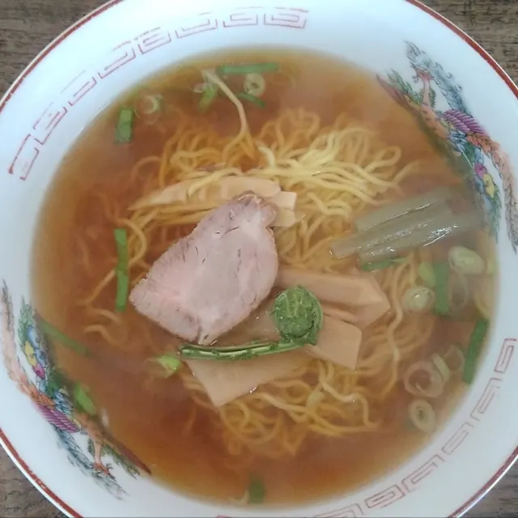
Mei Ke Taira Shimoni
ヤマザキショップ ばいてん
Yamazakishoppu Baiten
ペンション野ばら
Penshon No Bara
新郷温泉館
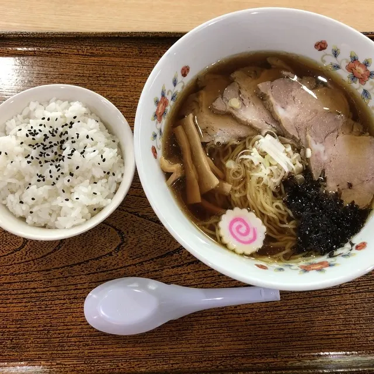
Shingou Onsen Kan
道の駅しんごう
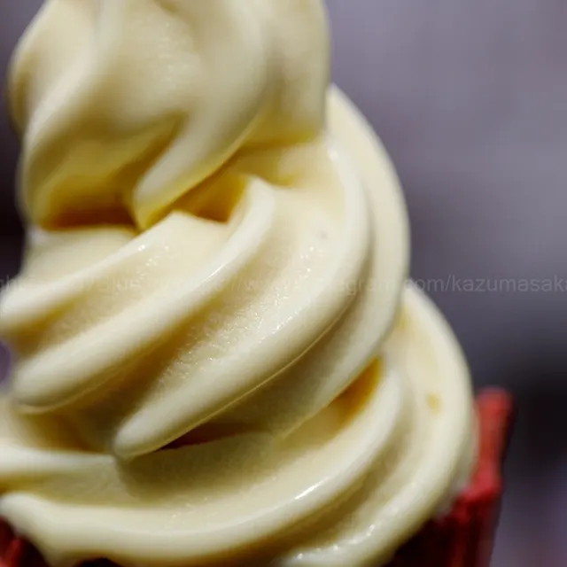
Michi No Eki Shingou
えびす屋
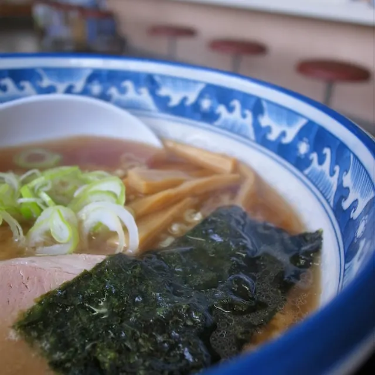
Ebisu Ya
お食事処 わし亭
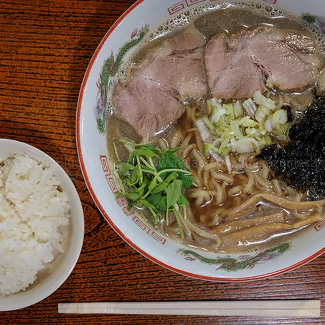
O Shokuji Tokoro Washi Tei
お食事処 東京屋
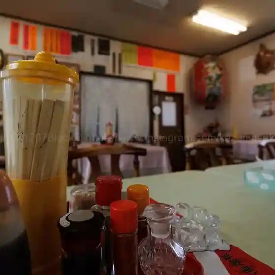
O Shokuji Tokoro Toukyou Ya
福山食堂
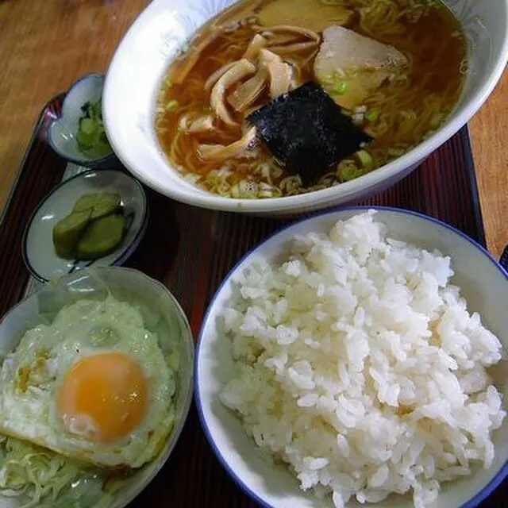
Fukuyama Shokudou
Sights
Oishigami Pyramid
Mysterious hill with giant stones said to mark the compass directions.
Makinotai Green Park
65-hectare highland ranch park at 350 m with sheep, goats and ponies.
Christ Park
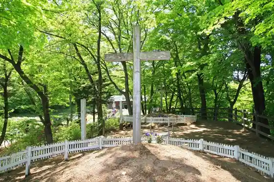
Christ Park in Shingo Village was created based on the legend that Jesus Christ did not actually die on the cross at Golgotha but instead escaped to Japan and died in Shingo Village at the age of 106.
Maginotai Green Park, Roadside Station Shingou
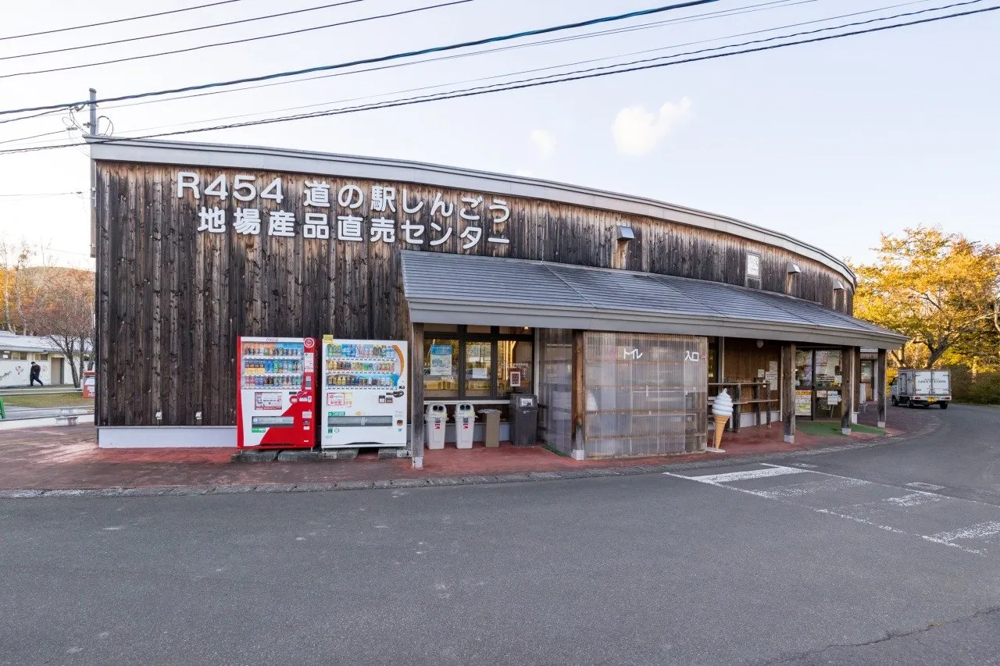
The 65-hectare site includes an auto campground, bungalow accommodations, a grand golf course, tennis courts, a ranch, and livestock processing facilities.
Skunk Cabbage Colony Walk
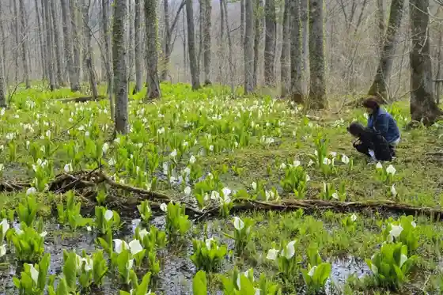
One of northern Tohoku's largest skunk cabbage colonies, with about 100,000 plants blooming in late April-early May.
Chosenji Temple
Temple entered through a solemn old gate, with a calm, atmospheric precinct.
Mitake Shrine (Herai)
Shrine founded in 863 with zelkova trees hundreds of years old.
Mitake Shrine (Nishikoshi)
Local shrine to Ukanomitama, deity of harvests and business.